Browse results
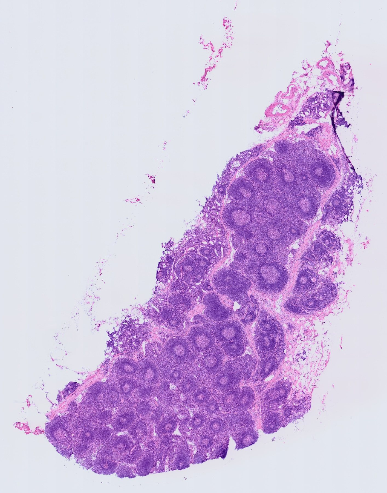
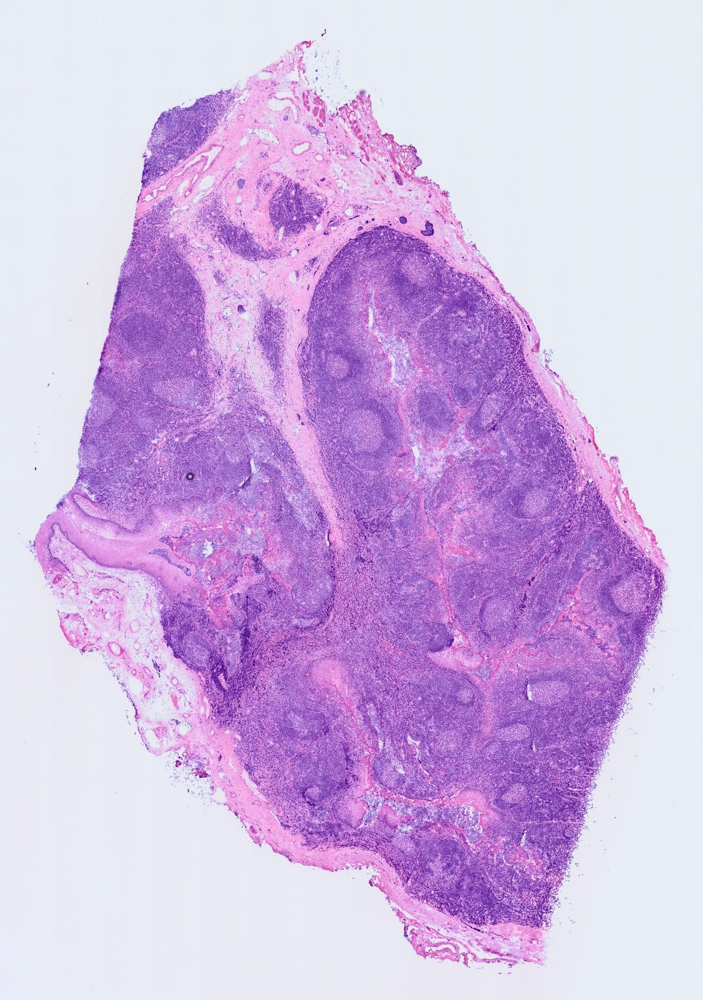
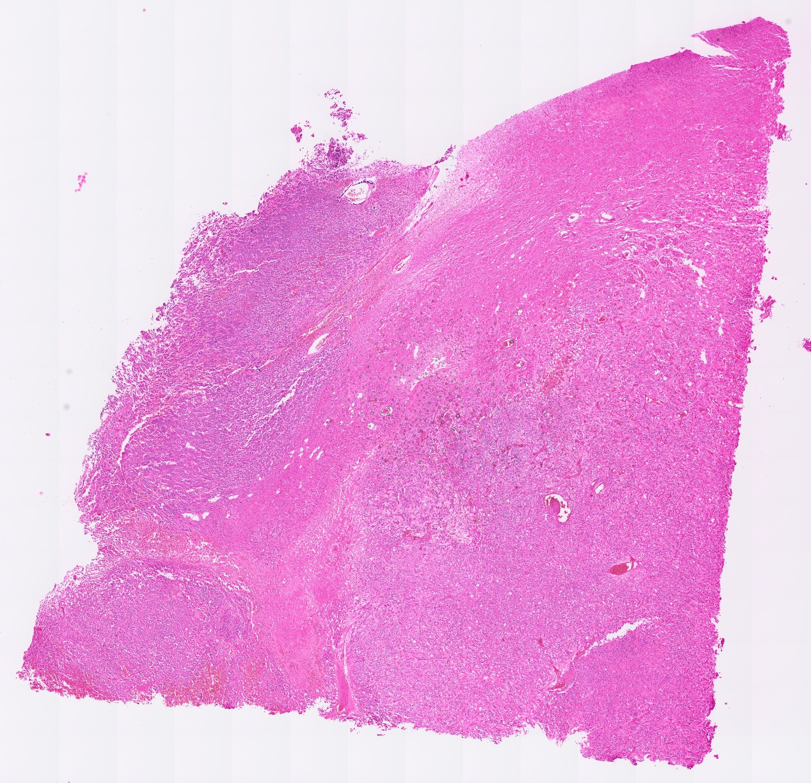
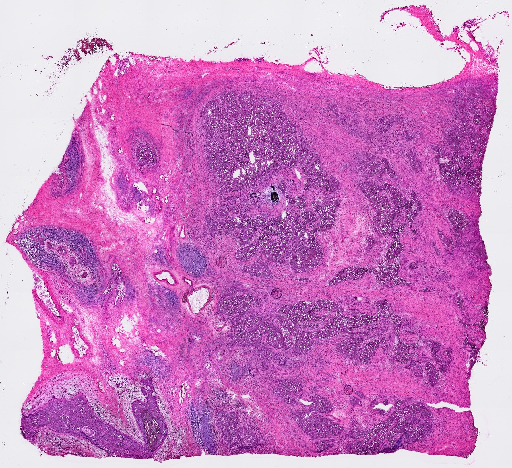
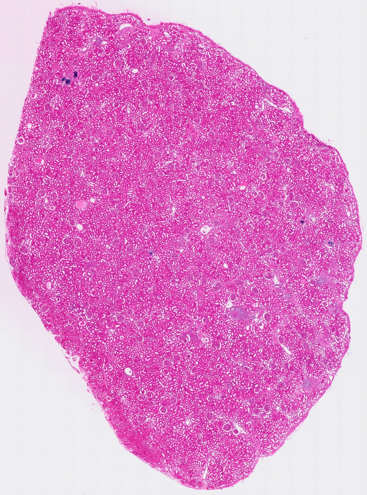
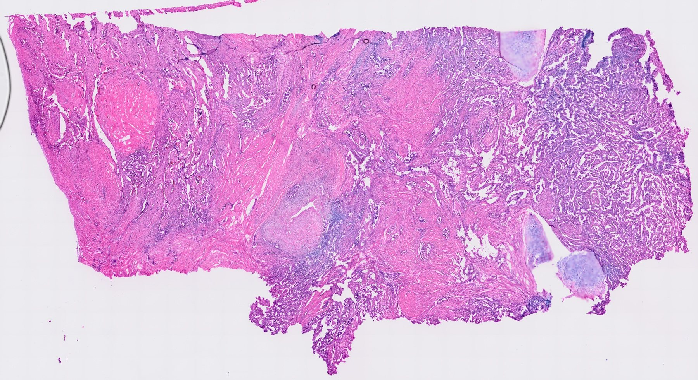
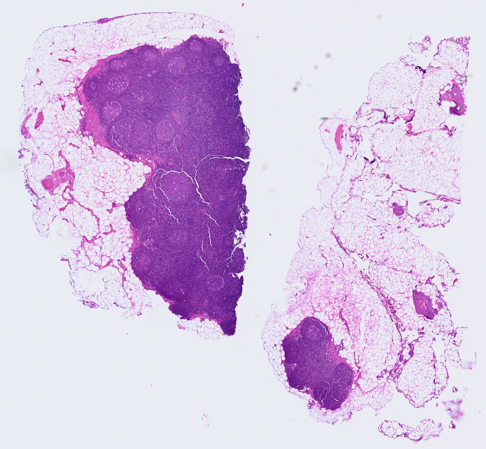
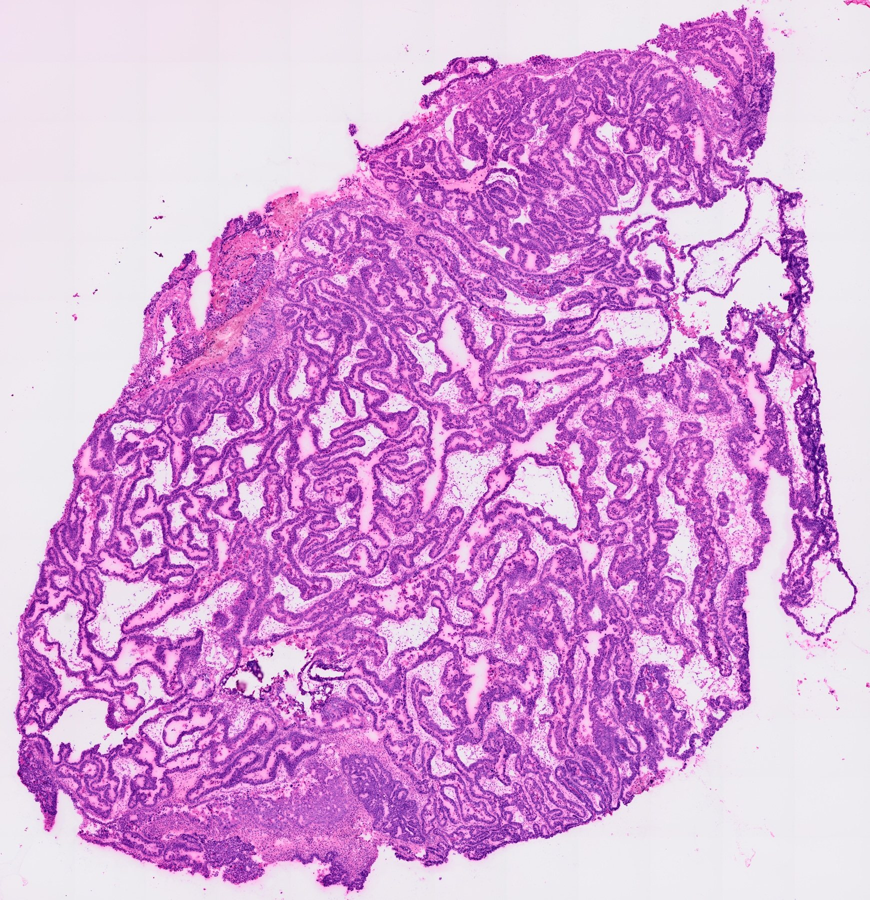
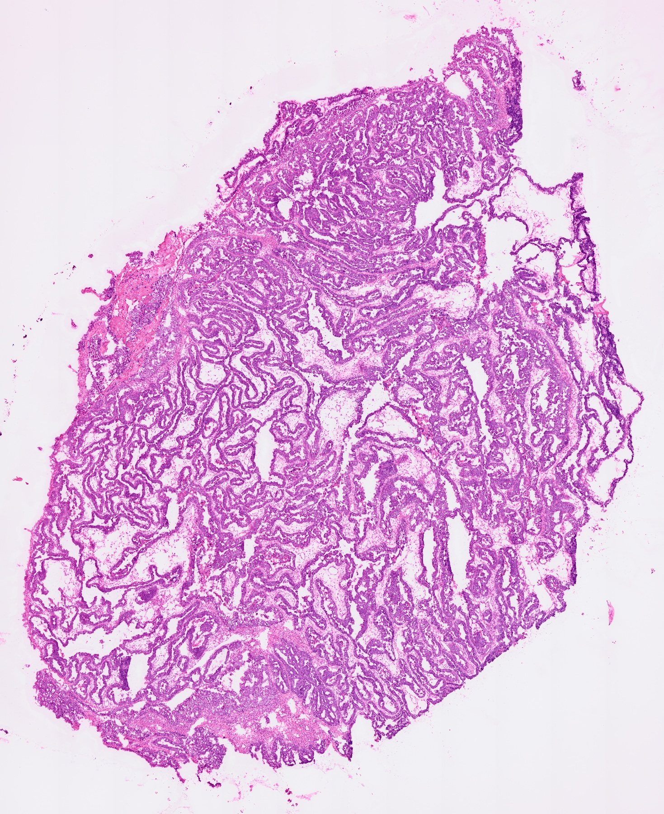
10x ovarian cancer, fresh frozen
Exploratory H&E result · KODAMA plot · nine paired fields
View result →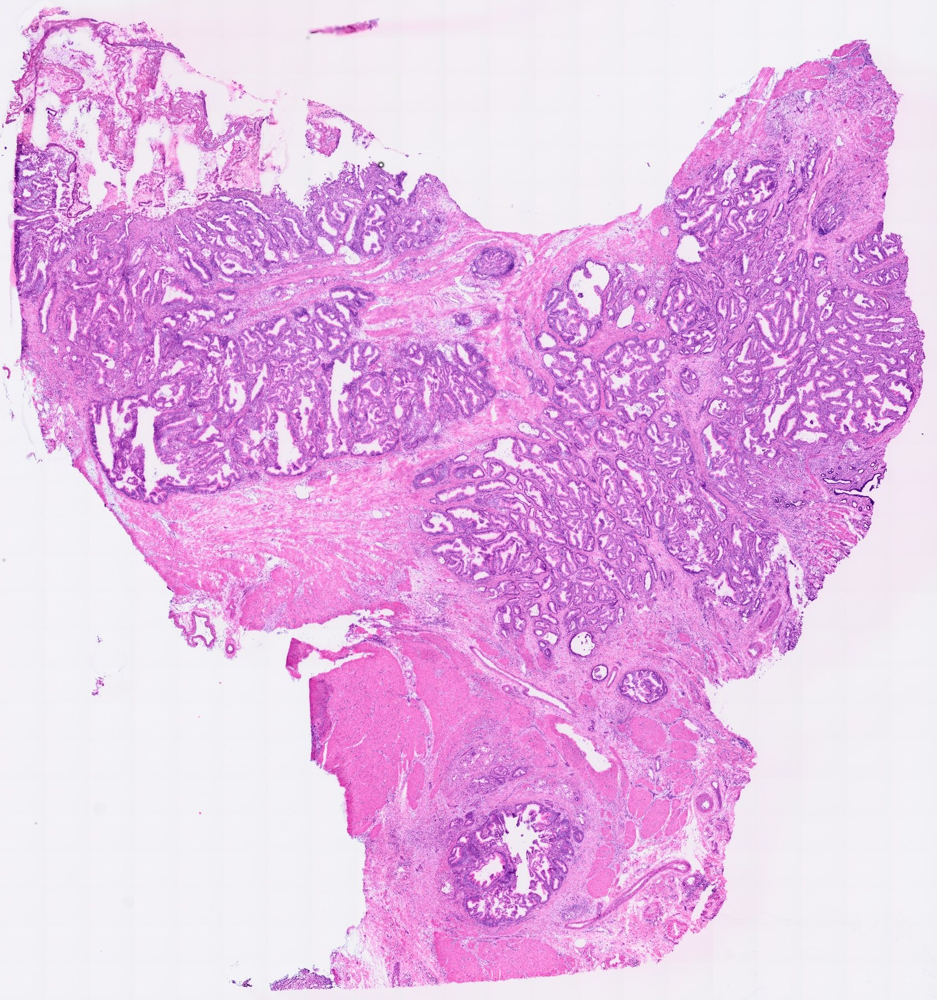
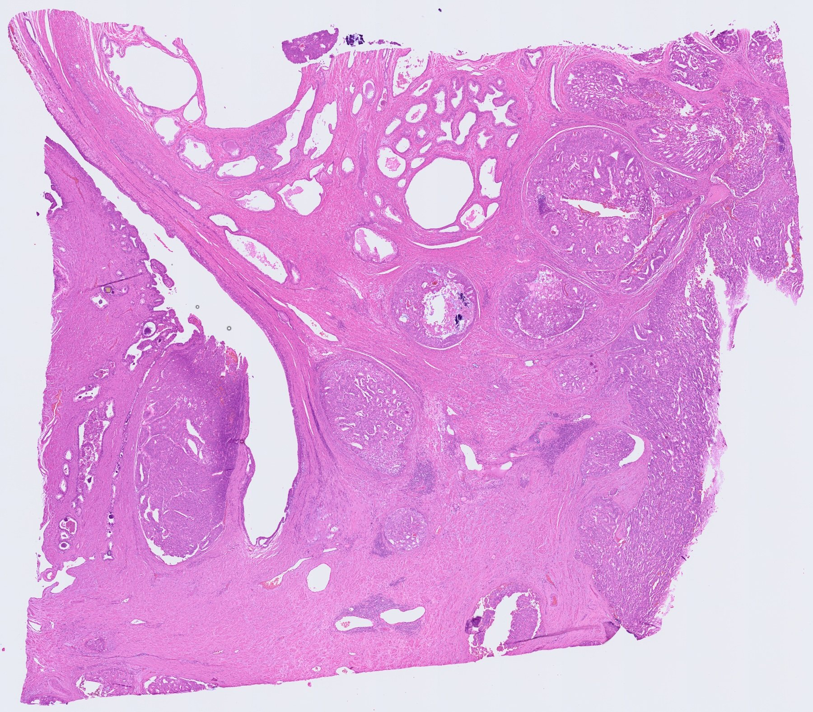
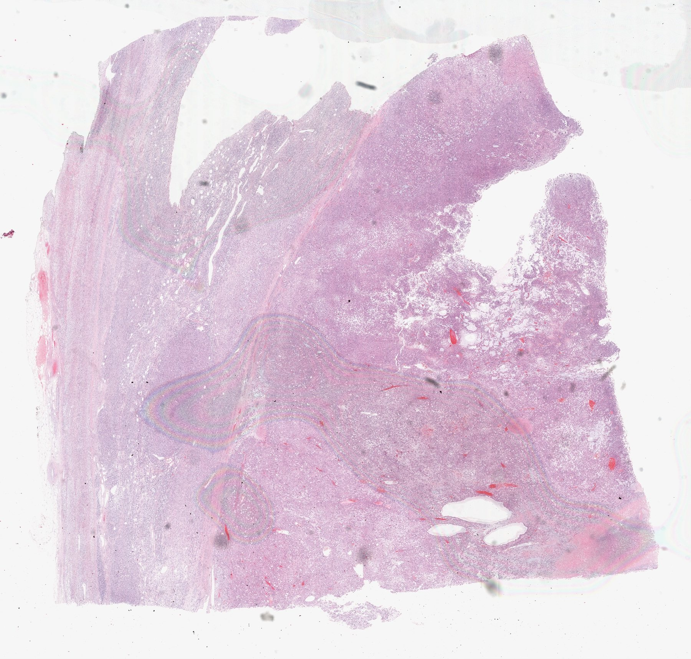
Four methods on complete H&E slides
Browse 8 public-source full-slide visual comparisons from U-Net, DeepLabV3+, MedSAM, and VISTA-PATH. No independent whole-slide expert masks or accuracy rankings are available. View the full-slide comparator results →